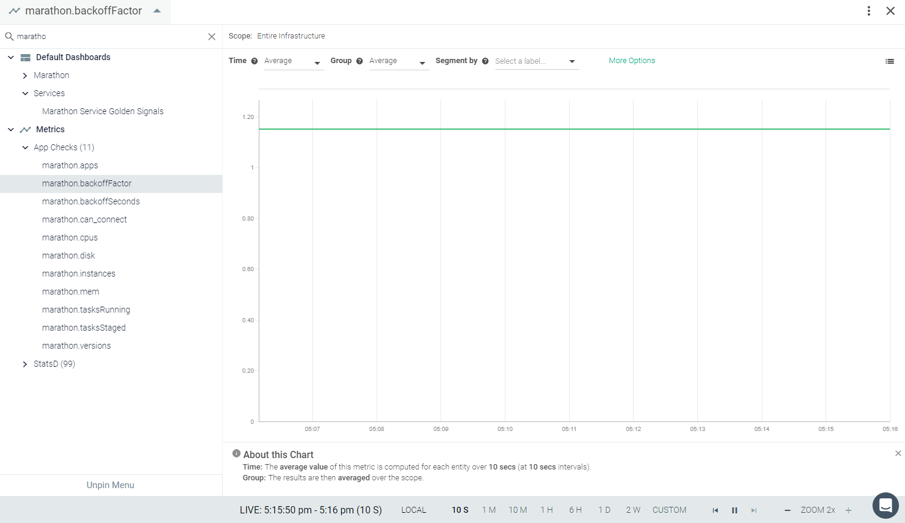
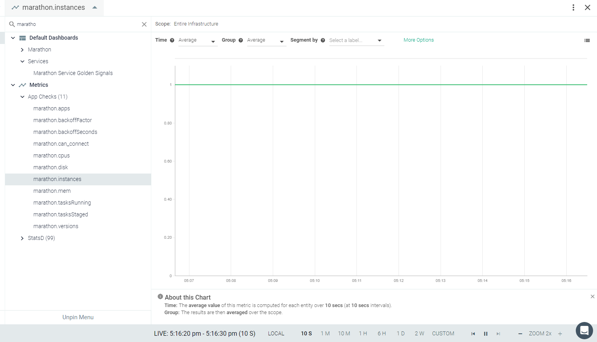

**Copy of Mesos/Marathon**
Mesos is built using the same principles as the Linux kernel, only at a different level of abstraction. The Mesos kernel runs on every machine and provides applications (e.g., Hadoop, Spark, Kafka, Elasticsearch) with API’s for resource management and scheduling across entire datacenter and cloud environments. Marathon is a production-grade container orchestration platform for Apache Mesos.
If Mesos and Marathon are installed in your environment, the Sysdig agent will automatically connect and start collecting metrics.You may need to edit the default entries to add a custom configuration if the default does not work. See Default Configuration.
This page describes the default configuration settings, how to edit the configuration to collect additional information, the metrics available for integration, and a sample result in the Sysdig Monitor UI.
Mesos/Marathon Setup
Both Mesos and Marathon will automatically expose all metrics. You do not need to add anything to the Mesos/Marathon instance.
Sysdig Agent Configuration
Review how to Edit dragent.yaml to Integrate or Modify Application Checks.
The Sysdig agent has different entries for mesos-master, mesos-slave and marathon in its configuration file. Default entries are present in Sysdig's dragent.default.yaml file and collect all metrics for Mesos. For Marathon, it collects basic metrics. You may need add configuration to collect additional metrics.
Default Configuration
In the urls for mesos-master and mesos-slave, {mesos_url} will be replaced with either the hostname of the autodetected mesos master/slave if autodetection is enabled or an explicit value from mesos_state_uri otherwise.
In the urls for marathon, {marathon_url} will be replaced with the hostname of the first configured/discovered marathon framework.
For all mesos and marathon apps, {auth_token} will either be blank or an autogenerated token obtained via the /acs/api/v1/auth/login endpoint.
Mesos Master
app_checks:
- name: mesos-master
check_module: mesos_master
interval: 30
pattern:
comm: mesos-master
conf:
url: "{mesos_url}:{port}"
auth_token: "{auth_token}"
mesos_creds: "{mesos_creds}"Mesos Slave
app_checks:
- name: mesos-slave
check_module: mesos_slave
pattern:
comm: mesos-slave
interval: 30
conf:
url: "{mesos_url}:{port}"
auth_token: "{auth_token}"
mesos_creds: "{mesos_creds}"
# Name of individual tasks to monitor, if needed
# tasks:
# - mongo
# - cassandraMarathon
app_checks:
- name: marathon
check_module: marathon
interval: 30
pattern:
arg: mesosphere.marathon.Main
conf:
url: "{marathon_url}"
auth_token: "{auth_token}"
marathon_creds: "{marathon_creds}"Warning
Remember! Never edit dragent.default.yaml directly; always edit only dragent.yaml.
Example 1
Marathon
Enable the flag full_metrics to collect all metrics for marathon.
Following additional metrics collected with this configuration:
marathon.cpus
marathon.disk
marathon.instances marathon.mem
app_checks:
- name: marathon
check_module: marathon
interval: 30
pattern:
arg: mesosphere.marathon.Main
conf:
url: "{marathon_url}"
auth_token: "{auth_token}"
marathon_creds: "{marathon_creds}"
full_metrics: trueMetrics Available
Mesos Master
Metric Name | Metric Description |
|---|---|
mesos.framework.cpu (gauge) | Framework cpu |
mesos.framework.mem (gauge) | Framework mem shown as mebibyte |
mesos.framework.disk (gauge) | Framework disk shown as mebibyte |
mesos.role.cpu (gauge) | Role cpu |
mesos.role.mem (gauge) | Role mem shown as mebibyte |
mesos.role.disk (gauge) | Role disk shown as mebibyte |
mesos.cluster.tasks_error (gauge) | Number of tasks that were invalid shown as task |
mesos.cluster.tasks_failed (rate) | Number of failed tasks shown as task |
mesos.cluster.tasks_finished (rate) | Number of finished tasks shown as task |
mesos.cluster.tasks_killed (rate) | Number of killed tasks shown as task |
mesos.cluster.tasks_lost (rate) | Number of lost tasks shown as task |
mesos.cluster.tasks_running (gauge) | Number of running tasks shown as task |
mesos.cluster.tasks_staging (gauge) | Number of staging tasks shown as task |
mesos.cluster.tasks_starting (gauge) | Number of starting tasks shown as task |
mesos.cluster.slave_registrations (gauge) | Number of slaves that were able to cleanly re-join the cluster and connect back to the master after the master is disconnected. |
mesos.cluster.slave_removals (gauge) | Number of slaves removed for various reasons, including maintenance |
mesos.cluster.slave_reregistrations (gauge) | Number of slave re-registrations |
mesos.cluster.slave_shutdowns_canceled (gauge) | Number of cancelled slave shutdowns |
mesos.cluster.slave_shutdowns_scheduled (gauge) | Number of slaves which have failed their health check and are scheduled to be removed |
mesos.cluster.slaves_active (gauge) | Number of active slaves |
mesos.cluster.slaves_connected (gauge) | Number of connected slaves |
mesos.cluster.slaves_disconnected (gauge) | Number of disconnected slaves |
mesos.cluster.slaves_inactive (gauge) | Number of inactive slaves |
mesos.cluster.cpus_percent (gauge) | Percentage of allocated CPUs shown as percent |
mesos.cluster.cpus_used (gauge) | Number of allocated CPUs |
mesos.cluster.cpus_total (gauge) | Number of CPUs |
mesos.cluster.gpus_total (gauge) | Number of GPUs |
mesos.cluster.disk_percent (gauge) | Percentage of allocated disk space shown as percent |
mesos.cluster.disk_used (gauge) | Allocated disk space shown as mebibyte |
mesos.cluster.disk_total (gauge) | Disk space shown as mebibyte |
mesos.cluster.mem_percent (gauge) | Percentage of allocated memory shown as percent |
mesos.cluster.mem_used (gauge) | Allocated memory shown as mebibyte |
mesos.cluster.mem_total (gauge) | Total memory shown as mebibyte |
mesos.registrar.queued_operations (gauge) | Number of queued operations |
mesos.registrar.registry_size_bytes (gauge) | Registry size shown as byte |
mesos.registrar.state_fetch_ms (gauge) | Registry read latency shown as millisecond |
mesos.registrar.state_store_ms (gauge) | Registry write latency shown as millisecond |
mesos.registrar.state_store_ms.count (gauge) | Registry write count |
mesos.registrar.state_store_ms.max (gauge) | Maximum registry write latency shown as millisecond |
mesos.registrar.state_store_ms.min (gauge) | Minimum registry write latency shown as millisecond |
mesos.registrar.state_store_ms.p50 (gauge) | Median registry write latency shown as millisecond |
mesos.registrar.state_store_ms.p90 (gauge) | 90th percentile registry write latency shown as millisecond |
mesos.registrar.state_store_ms.p95 (gauge) | 95th percentile registry write latency shown as millisecond |
mesos.registrar.state_store_ms.p99 (gauge) | 99th percentile registry write latency shown as millisecond |
mesos.registrar.state_store_ms.p999 (gauge) | 99.9th percentile registry write latency shown as millisecond |
mesos.registrar.state_store_ms.p9999 (gauge) | 99.99th percentile registry write latency shown as millisecond |
mesos.cluster.frameworks_active (gauge) | Number of active frameworks |
mesos.cluster.frameworks_connected (gauge) | Number of connected frameworks |
mesos.cluster.frameworks_disconnected (gauge) | Number of disconnected frameworks |
mesos.cluster.frameworks_inactive (gauge) | Number of inactive frameworks |
mesos.stats.system.cpus_total (gauge) | Number of CPUs available |
mesos.stats.system.load_15min (gauge) | Load average for the past 15 minutes |
mesos.stats.system.load_1min (gauge) | Load average for the past minutes |
mesos.stats.system.load_5min (gauge) | Load average for the past 5 minutes |
mesos.stats.system.mem_free_bytes (gauge) | Free memory shown as byte |
mesos.stats.system.mem_total_bytes (gauge) | Total memory shown as byte |
mesos.stats.elected (gauge) | Whether this is the elected master |
mesos.stats.uptime_secs (gauge) | Uptime shown as second |
mesos.cluster.dropped_messages (gauge) | Number of dropped messages shown as message |
mesos.cluster.outstanding_offers (gauge) | Number of outstanding resource offers |
mesos.cluster.event_queue_dispatches (gauge) | Number of dispatches in the event queue |
mesos.cluster.event_queue_http_requests (gauge) | Number of HTTP requests in the event queue shown as request |
mesos.cluster.event_queue_messages (gauge) | Number of messages in the event queue shown as message |
mesos.cluster.invalid_framework_to_executor_messages (gauge) | Number of invalid framework messages shown as message |
mesos.cluster.invalid_status_update_acknowledgements (gauge) | Number of invalid status update acknowledgements |
mesos.cluster.invalid_status_updates (gauge) | Number of invalid status updates |
mesos.cluster.valid_framework_to_executor_messages (gauge) | Number of valid framework messages shown as message |
mesos.cluster.valid_status_update_acknowledgements (gauge) | Number of valid status update acknowledgements |
mesos.cluster.valid_status_updates (gauge) | Number of valid status updates |
Mesos Slave
Metric Name | Metric Description |
|---|---|
mesos.stats.system.cpus_total(gauge) | Number of CPUs available |
mesos.stats.system.load_15min(gauge) | Load average for the past 15 minutes |
mesos.stats.system.load_1min(gauge) | Load average for the past minutes |
mesos.stats.system.load_5min(gauge) | Load average for the past 5 minutes |
mesos.stats.system.mem_free_bytes(gauge) | Free memory |
mesos.stats.system.mem_total_bytes(gauge) | Total memory |
mesos.stats.registered(gauge) | Whether this slave is registered with a master |
mesos.stats.uptime_secs(gauge) | Slave uptime |
mesos.state.task.cpu(gauge) | Task cpu |
mesos.state.task.mem(gauge) | Task memory |
mesos.state.task.disk(gauge) | Task disk |
mesos.slave.tasks_failed(gauge) | Number of failed tasks |
mesos.slave.tasks_finished(gauge) | Number of finished tasks |
mesos.slave.tasks_killed(gauge) | Number of killed tasks |
mesos.slave.tasks_lost(gauge) | Number of lost tasks |
mesos.slave.tasks_running(gauge) | Number of running tasks |
mesos.slave.tasks_staging(gauge) | Number of staging tasks |
mesos.slave.tasks_starting(gauge) | Number of starting tasks |
mesos.slave.cpus_percent(gauge) | Percentage of allocated CPUs |
mesos.slave.cpus_used(gauge) | Number of allocated CPUs |
mesos.slave.cpus_total(gauge) | Number of CPUs |
mesos.slave.disk_percent(gauge) | Percentage of allocated disk space |
mesos.slave.disk_used(gauge) | Allocated disk space |
mesos.slave.disk_total(gauge) | Disk space |
mesos.slave.mem_percent(gauge) | Percentage of allocated memory |
mesos.slave.mem_used(gauge) | Allocated memory |
mesos.slave.mem_total(gauge) | Total memory |
mesos.slave.executors_registering(gauge) | Number of executors registering |
mesos.slave.executors_running(gauge) | Number of executors running |
mesos.slave.executors_terminated(gauge) | Number of terminated executors |
mesos.slave.executors_terminating(gauge) | Number of terminating executors |
mesos.slave.frameworks_active(gauge) | Number of active frameworks |
mesos.slave.invalid_framework_messages(gauge) | Number of invalid framework messages |
mesos.slave.invalid_status_updates(gauge) | Number of invalid status updates |
mesos.slave.recovery_errors(gauge) | Number of errors encountered during slave recovery |
mesos.slave.valid_framework_messages(gauge) | Number of valid framework messages |
mesos.slave.valid_status_updates(gauge) | Number of valid status updates |
Marathon:
Metric Name | Metric Description |
|---|---|
marathon.apps (gauge) | Number of applications |
marathon.backoffFactor (gauge) | Backoff time multiplication factor for each consecutive failed task launch; tagged by app_id and version |
marathon.backoffSeconds (gauge) | Task backoff period; tagged by app_id and version shown as second |
marathon.cpus (gauge) | Configured CPUs for each instance of a given application |
marathon.disk (gauge) | Configured CPU for each instance of a given application shown as mebibyte |
marathon.instances (gauge) | Number of instances of a given application; tagged by app_id and version |
marathon.mem (gauge) | Configured memory for each instance of a given application; tagged by app_id and version shown as mebibyte |
marathon.tasksRunning (gauge) | Number of tasks running for a given application; tagged by app_id and version shown as task |
marathon.tasksStaged (gauge) | Number of tasks staged for a given application; tagged by app_id and version shown as task |
Result in the Monitor UI
Mesos Master:
Mesos Slave:
Marathon:
|  |
|  |